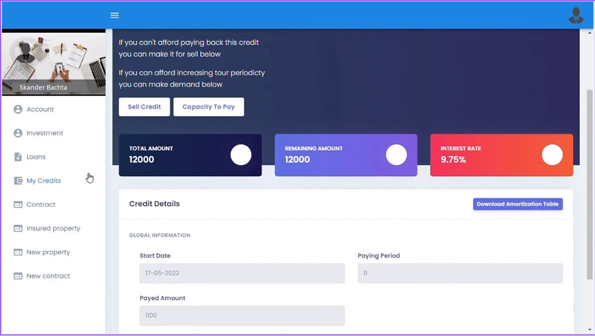

Fincro

Our application gives the opportunity to people with low or unstable income to get credits they need. They also have the chance to insure their credits and property and sell their credits when needed or buy ones to make some long term investments. Moreover, we thought of some perfect solutions for our clients who cannot provide a guarantor for their loans, they can, instead, apply for a micro leasing formula that satisfies their aims.
We do is geared toward helping our members get their money right.will constantly innovate and build ways to give our members what they need to make that happen.
For that, we will develop a responsive website that can match with all types of devices and especially smartphones.
• Development of Microfinance and Micro-Insurance web platform in Tunisia using Springboot for the Backend part and Angular 13 for the Frontend part.
My task was :
• Development of the Micro-Insurance Management module: Use of several mathematical formulas for the calculation of the Insurance interest rate,